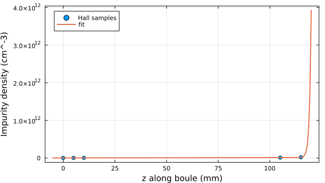
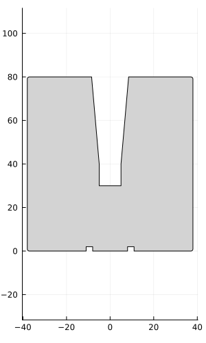
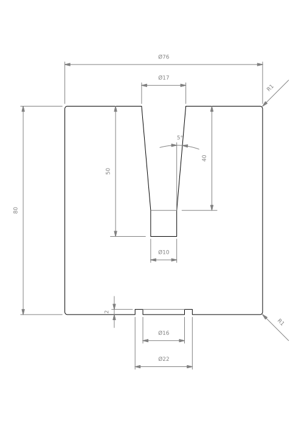
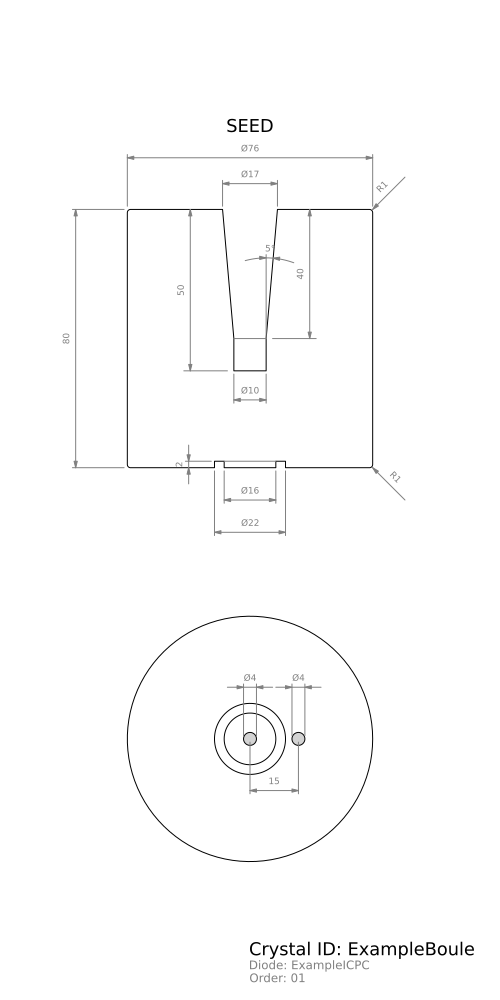
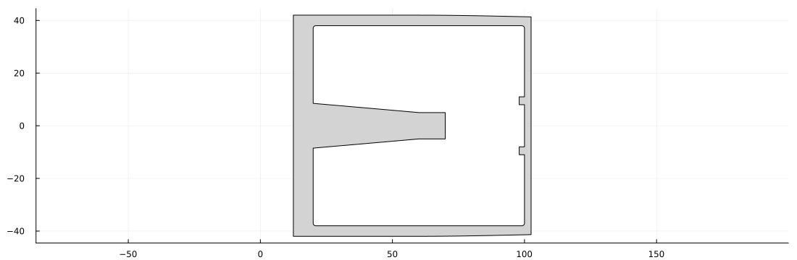
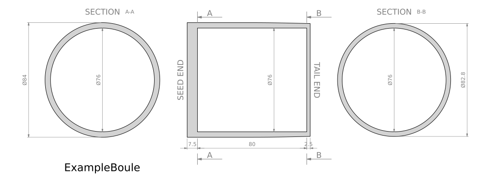
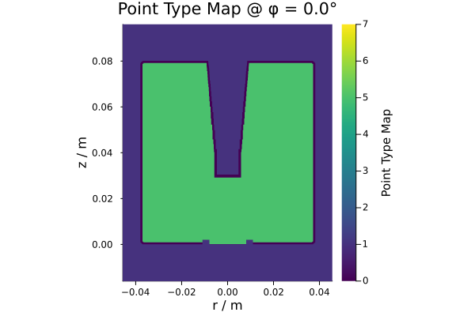

Tutorial
This walkthrough builds and characterizes a generic inverted-coaxial point-contact (ICPC) germanium detector cut from a boule. All numbers below are placeholders — the goal is to show the workflow, not reproduce a specific detector.
The full pipeline:
- Define a
CrystallineBoulefrom impurity measurements + an external profile. - Fit the impurity-density curve.
- Define an
InvertedCoaxDesign. - Plot the detector and its position in the boule.
- Characterize it with
characterize!— runs the SSD field solver and populates depletion voltage, minimum bulk E-field, mass. - Inspect and plot the field.
- Iterate on the geometry without re-doing the cold solve.
- Serialize to LEGEND-format metadata containers.
Setup
using LegendDetectorDesign
const LDD = LegendDetectorDesign
using Unitful
using SolidStateDetectors
using Plots
using LsqFitT controls the floating-point precision used throughout the geometry, the impurity-model parameters, and the SSD grid. Float32 is the standard choice and matches LEGEND production simulations:
T = Float32Float321. Define a crystalline boule
A CrystallineBoule bundles the boule's identity, its external profile (a BouleGeometry), the raw impurity measurements, and the parameters of an impurity-density fit. Start with the measured Hall samples and a piecewise radius profile:
z_hall = [ 0, 5, 10, 105, 115] * u"mm"
impurity_hall = [0.40, 0.55, 0.70, 1.35, 2.1] * u"1e10/cm^3"
# axially-symmetric boule outline; measured radius at three z stations
z_radius = [0, 60, 120] * u"mm"
r_radius = [42, 42, 41] * u"mm"
boule = CrystallineBoule(T;
name = "ExampleBoule",
order = "01",
impurity_model = :linear_exponential_boule,
impurity_hall = impurity_hall,
z_hall = z_hall,
geometry = BouleGeometry(T; z = z_radius, radius = r_radius),
) ╭──╮╭──────────╮╭───╮ CrystallineBoule{Float32} - ExampleBoule
/ ││ ││ \ ╰─Impurity model: linear_exponential_boule
│ ││ ││ ) ╰─Params: missing
\ ││ ││ / ╰─Length: 120.0 mm
╰──╯╰──────────╯╰───╯ ╰─Mass: 3643 g
BouleGeometry accepts non-uniform z samples and fits a Fritsch–Carlson monotonic cubic spline through them — the same interpolator SSD uses for SplineBouleImpurityDensity.
The four built-in impurity-model symbols accepted by impurity_model = are:
| symbol | formula |
|---|---|
:linear_boule | a + b·z |
:parabolic_boule | a + b·z + c·z² |
:linear_exponential_boule | a + b·z + n·exp((z − l)/m) |
:parabolic_exponential_boule | a + b·z + c·z² + n·exp((z − l)/m) |
The exponential-tail families are useful when the resistivity rises sharply near one end of the boule.
2. Fit the impurity model
Use any nonlinear-least-squares tool — LsqFit.jl works directly with the curve functions returned by fit_function:
fit = curve_fit(
boule.impurity_model, # = LDD.linear_exponential_boule
boule.z_hall,
boule.impurity_hall,
[1.0, 0.1, 1.0, 70.0, 30.0], # initial guess for [a, b, n, l, m]
)
boule.impurity_model_parameters = fit.param5-element Vector{Float64}:
5.056292269312937
0.08145677052617509
7.871890697053817e-5
106.12724611853949
0.7829075463133024boule.impurity_model_parameters is stored as bare numbers in internal units. To recover the unitful form, use get_unitful_property:
get_unitful_property(boule, :impurity_model_parameters)5-element Vector{Unitful.Quantity}:
5.0562920570373535e9 cm^-3
8.145677298307419e7 mm^-1 cm^-3
78718.90556998551 cm^-3
106.12724f0 mm
0.78290755f0 mm3. Visualize the impurity profile
get_impurity_density evaluates the fitted curve at any axial position, broadcasting over arrays:
x_dense = range(-5u"mm", maximum(z_hall) + 5u"mm", length = 200)
scatter(z_hall, impurity_hall;
label = "Hall samples",
xguide = "z along boule",
yguide = "Impurity density",
frame = :box,
size = (640, 360),
)
plot!(x_dense, get_impurity_density(boule, x_dense), label = "fit", lw = 2)
4. Define the detector
InvertedCoaxDesign builds an ICPC geometry from named dimensions and wraps it in a DetectorDesign. All length kwargs accept Number (interpreted as mm) or a Unitful.Quantity; angles default to degrees.
det = InvertedCoaxDesign(T;
name = "ExampleICPC",
height = 80,
radius = 38,
pc_radius = 8,
borehole_pc_gap = 30,
borehole_radius = 5,
borehole_taper_height = 40,
borehole_taper_angle = 5,
top_taper_height = 1,
top_taper_angle = 45,
bottom_taper_height = 1,
bottom_taper_angle = 45,
dead_layer_depth = 0.8,
offset = 100,
)╭───╮ ╭───╮ DetectorDesign{Float32} - ExampleICPC
│ │ │ │ ╰─Geometry: InvertedCoaxGeometry{Float32, ValidGeometry}
│ │ │ │ ╰─Offset of p⁺contact from seed end: 100.0 mm
│ ╰─╯ │ ╰─Minimum E field: missing
│ │ ╰─Depletion/Operational Voltage: missing / missing
╰── ─── ──╯ ╰─Mass: 1972 g
The constructor tags the geometry ValidGeometry only when the dimensions satisfy basic consistency checks and offset ≥ height (so the detector fits inside the boule). Invalid designs return with mass = missing and won't simulate.
det.offset is the position of the p⁺ point contact relative to the boule's seed end — it tells the impurity model which slice of the boule this crystal was cut from.
5. Plot the detector
The plot extension loads automatically when Plots is present. For a quick look at the geometry alone:
plot(det.geometry, size = (300, 500))
The same recipe with include_measurements = true calls out every dimension:
plot(det.geometry, include_measurements = true, size = (500, 700))
For a full measured drawing — the kind you'd attach to an order to a manufacturer — the DetectorDesign recipe adds the p⁺ spot pattern, title, and order labels:
plot(det, technical_drawing = true, crystal_name = boule.name, order = boule.order, corner_rounding = :both)
6. Plot the detector in the boule
The package ships a two-argument recipe plot(boule, det) that draws the detector's silhouette positioned at det.offset along the boule profile — the cut-position visualization you want when picking where to slice a new design from a known boule:
plot(boule, det, size = (1100, 360))
technical_drawing = true adds circular section cuts through the boule at the detector's top and bottom planes, plus offset markers — useful for verifying the boule has enough radius to accommodate the detector everywhere along its height:
plot(boule, det, technical_drawing = true, size = (1100, 400))
7. Characterize the detector
characterize! runs the SSD field solver and fills in det.Vdep, det.Vop, det.Emin, det.Emin_pos, det.mass. Heavier refinement gives finer field maps at the cost of build time; the tutorial uses a moderate two-pass schedule:
sim = characterize!(det, boule, refinement_limits = [0.2, 0.1, 0.05, 0.02])
det╭───╮ ╭───╮ DetectorDesign{Float32} - ExampleICPC
│ │ │ │ ╰─Geometry: InvertedCoaxGeometry{Float32, ValidGeometry}
│ │ │ │ ╰─Offset of p⁺contact from seed end: 100.0 mm
│ ╰─╯ │ ╰─Minimum E field: 62.6 V/cm @ r = 0.0, z = 11.6
│ │ ╰─Depletion/Operational Voltage: 2075.7 V / 2575.7 V
╰── ─── ──╯ ╰─Mass: 1972 g
What happens internally:
- The impurity model is built from
boule.impurity_model_parameters, offset-adjusted bydet.offset. - SSD is run at the maximum allowed voltage (
Vmax, default5000 V) with two coarse refinement passes. - If the detector depletes, the converged potential is projected to
Vdep + 500 Vanalytically using the weighting-potential superposition trick — no second cold solve required. populate_design!extracts the depletion voltage, the minimum bulk E-field, and its(r, z)location.
The returned sim::SSD.Simulation is kept around so you can plot or post-process it.
8. Inspect the results
Each detector field is a bare number in internal units:
(Vdep = det.Vdep, Vop = det.Vop, Emin = det.Emin, Emin_pos = det.Emin_pos, mass = det.mass)(Vdep = 2075.7295f0, Vop = 2575.7295f0, Emin = 62.61541f0, Emin_pos = (0.0f0, 11.623858f0), mass = 1971.9075f0)Convert to unitful values when you need them — e.g. det.Vdep * u"V". Convenience accessor for the cutting offset:
get_unitful_property(det, :offset)100.0f0 mm9. Plot the electric field
sim.electric_field and sim.electric_potential are SSD scalar / vector fields on the SSD grid — they plot directly:
plot(sim.electric_field;
full_det = true,
color = cgrad(:inferno, scale = :exp),
xunit = u"mm",
yunit = u"mm",
zunit = u"kV/cm",
clims = (0, 3),
legendfontsize = 6,
)
plot_electric_fieldlines!(sim; sampling = 5u"mm", lw = 0.5, title = "")
plot!(sim.detector.contacts[1]; st = :slice, lw = 1)
plot!(sim.detector.contacts[2]; st = :slice, c = :lightgrey, lw = 2)
The depletion / point-type map is one plot call:
plot(sim.point_types, full_det = true)
10. Iterate on the geometry — warm-start
You'll often want to sweep one dimension while keeping the rest fixed. The keyword-only clone-constructor InvertedCoaxGeometry(geo; …) does exactly that:
geo2 = InvertedCoaxGeometry(det.geometry;
height = T(81),
)
det2 = InvertedCoaxDesign(det, geo2)╭───╮ ╭───╮ DetectorDesign{Float32} - ExampleICPC
│ │ │ │ ╰─Geometry: InvertedCoaxGeometry{Float32, ValidGeometry}
│ │ │ │ ╰─Offset of p⁺contact from seed end: 100.0 mm
│ ╰─╯ │ ╰─Minimum E field: missing
│ │ ╰─Depletion/Operational Voltage: missing / missing
╰── ─── ──╯ ╰─Mass: 1997 g
The previous simulation is a good initial guess for the new one — use the warm-start form of characterize! that takes the prior Simulation and re-converges from its potential instead of cold-resetting:
characterize!(det2, boule, sim)
det2╭───╮ ╭───╮ DetectorDesign{Float32} - ExampleICPC
│ │ │ │ ╰─Geometry: InvertedCoaxGeometry{Float32, ValidGeometry}
│ │ │ │ ╰─Offset of p⁺contact from seed end: 100.0 mm
│ ╰─╯ │ ╰─Minimum E field: 215.0 V/cm @ r = 5.8, z = 14.1
│ │ ╰─Depletion/Operational Voltage: 3366.2 V / 3866.2 V
╰── ─── ──╯ ╰─Mass: 1997 g
SSD continues from the existing grid and potential via update_till_convergence!, typically converging much faster than a fresh cold solve.
11. Persist metadata
Two companion functions serialize to LEGEND-format metadata containers:
LDD.design_to_meta(det)PropDicts.PropDict with 4 entries:
:geometry => PropDict(:borehole=>PropDict(:radius_in_mm=>5.0, :depth_…
:characterization => PropDict(:manufacturer=>PropDict(:dl_thickness_in_mm=>0.…
:type => "icpc"
:name => "ExampleICPC"LDD.boule_to_meta(boule, det)OrderedCollections.OrderedDict{Symbol, Any} with 5 entries:
:name => "ule"
:order => "01"
:impurity_measurements => OrderedDict{Symbol, Vector{Float32}}(:value_in_1e9e…
:impurity_curve => OrderedDict{Symbol, Any}(:model=>:linear_exponentia…
:slices => OrderedDict{Symbol, OrderedDict{Symbol, Float32}}(:…design_to_meta is the DetectorDesign flavor (it just delegates to geo_to_meta with the design's Vop and name). None of them write to disk — choose the writer yourself:
using YAML
YAML.write_file("boule_$(boule.order).yaml", LDD.boule_to_meta(boule, det))The inverse meta_to_geo / meta_to_design parse a PropDict back into a geometry / design.
Next steps
- See the API reference for the full list of types, exported functions, and the four available impurity models.
- For lower-level SSD operations — direct potential calculation, charge drift simulation, weighting-potential extraction — consult the SolidStateDetectors.jl documentation; everything in this package returns standard SSD objects.